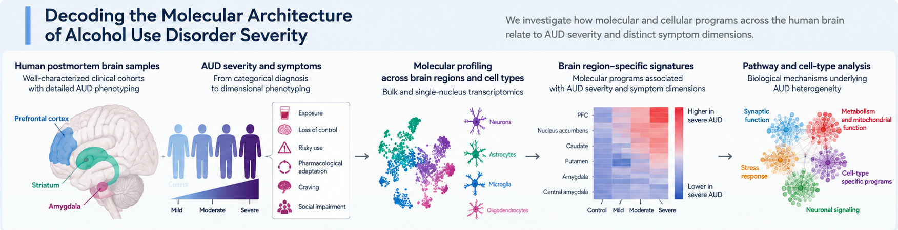
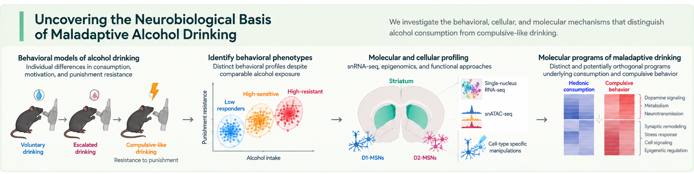

Research Projects.
Understanding why individuals differ in their vulnerability to alcohol use disorder—from the molecular architecture of human disease to the neural mechanisms of maladaptive drinking.
Decoding the Molecular Architecture of Alcohol Use Disorder Severity
How do molecular changes in the human brain relate to clinical severity and distinct dimensions of alcohol use disorder?

Alcohol use disorder (AUD) encompasses diverse clinical presentations that are often obscured by binary case–control comparisons. We integrate human postmortem brain transcriptomics, single-nucleus RNA sequencing, and detailed clinical phenotyping to examine molecular programs associated with AUD severity and specific symptom dimensions. Across brain regions and cell populations, we aim to distinguish shared disease-related alterations from biological signatures of individual clinical manifestations.
Uncovering the Neurobiological Basis of Maladaptive Alcohol Drinking
What distinguishes high alcohol consumption from drinking that persists despite adverse consequences?

Individuals vary markedly in their susceptibility to compulsive-like alcohol drinking, even with comparable alcohol exposure. We combine multidimensional mouse behavioral phenotyping with single-nucleus transcriptomics, epigenomic profiling, and cell-type-specific functional approaches to identify mechanisms that separate consumption from punishment-resistant drinking. Our work tests how distinct, potentially orthogonal molecular programs contribute to vulnerability and resilience to maladaptive alcohol use.
From clinical variation to cellular mechanisms.
One question: why does alcohol use become maladaptive?